The heart of object-oriented problem solving is the construction of a model. The model abstracts the essential details of the underlying problem from its usually complicated real world. Several modeling tools are wrapped under the heading of the UML, which stands for Unified Modeling Language. The purpose of this course is to present important highlights of the UML.
At the center of the UML are its nine different kinds of modeling diagrams, which we describe here.
Some of the sections of this course contain links to pages with more detailed information. And every section has short questions. Use them to test your understanding of the section topic.
Why is UML important?
Let's look at this question from the point of view of the construction trade. Architects design buildings. Builders use the designs to create buildings. The more complicated the building, the more critical the communication between architect and builder. Blueprints are the standard graphical language that both architects and builders must learn as part of their trade.
Writing software is not unlike constructing a building. The more complicated the underlying system, the more critical the communication among everyone involved in creating and deploying the software. In the past decade, the UML has emerged as the software blueprint language for analysts, designers, and programmers alike. It is now part of the software trade. The UML gives everyone from business analyst to designer to programmer a common vocabulary to talk about software design.
The UML is applicable to object-oriented problem solving. Anyone interested in learning UML must be familiar with the underlying tenet of object-oriented problem solving -- it all begins with the construction of a model. A model is an abstraction of the underlying problem. The domain is the actual world from which the problem comes.
Models consist of objects that interact by sending each other messages. Think of an object as "alive." Objects have things they know (attributes) and things they can do (behaviors or operations). The values of an object's attributes determine its state.
Classes are the "blueprints" for objects. A class wraps attributes (data) and behaviors (methods or functions) into a single distinct entity. Objects are instances of classes.
Use case diagrams describe what a system does from the standpoint of an external observer. The emphasis is on what a system does rather than how.
Use case diagrams are closely connected to scenarios. A scenario is an example of what happens when someone interacts with the system. Here is a scenario for a medical clinic.
"A patient calls the clinic to make an appointment for a yearly checkup. The receptionist finds the nearest empty time slot in the appointment book and schedules the appointment for that time slot. "
A use case is a summary of scenarios for a single task or goal. An actor is who or what initiates the events involved in that task. Actors are simply roles that people or objects play. The picture below is a Make Appointment use case for the medical clinic. The actor is a Patient. The connection between actor and use case is a communication association (or communication for short).
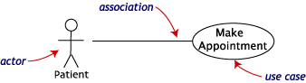
Actors are stick figures. Use cases are ovals. Communications are lines that link actors to use cases.
A use case diagram is a collection of actors, use cases, and their communications. We've put Make Appointment as part of a diagram with four actors and four use cases. Notice that a single use case can have multiple actors.
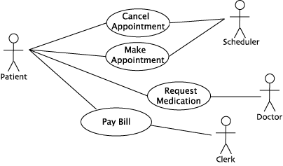
Use case diagrams are helpful in three areas.
A Class diagram gives an overview of a system by showing its classes and the relationships among them. Class diagrams are static -- they display what interacts but not what happens when they do interact.
The class diagram below models a customer order from a retail catalog. The central class is the Order. Associated with it are the Customer making the purchase and the Payment. A Payment is one of three kinds: Cash, Check, or Credit. The order contains OrderDetails (line items), each with its associated Item.
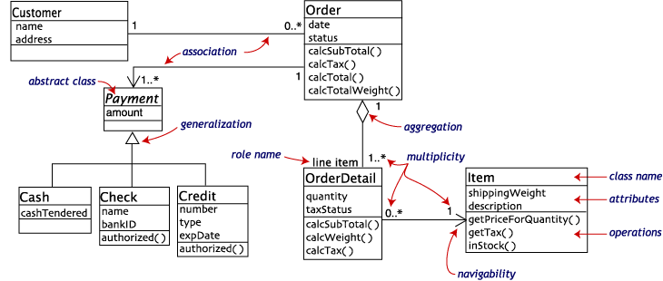
UML class notation is a rectangle divided into three parts: class name, attributes, and operations. Names of abstract classes, such as Payment, are in italics. Relationships between classes are the connecting links.
Our class diagram has three kinds of relationships.
An association has two ends. An end may have a role name to clarify the nature of the association. For example, an OrderDetail is a line item of each Order.
A navigability arrow on an association shows which direction the association can be traversed or queried. An OrderDetail can be queried about its Item, but not the other way around. The arrow also lets you know who "owns" the association's implementation; in this case, OrderDetail has an Item. Associations with no navigability arrows are bi-directional.
The multiplicity of an association end is the number of possible instances of the class associated with a single instance of the other end. Multiplicities are single numbers or ranges of numbers. In our example, there can be only one Customer for each Order, but a Customer can have any number of Orders.
This table gives the most common multiplicities.
| Multiplicities | Meaning |
|---|---|
| 0..1 | zero or one instance. The notation n . . m indicates n to m instances. |
| 0..* or * | no limit on the number of instances (including none). |
| 1 | exactly one instance |
| 1..* | at least one instance |
Every class diagram has classes, associations, and multiplicities. Navigability and roles are optional items placed in a diagram to provide clarity.
To simplify complex class diagrams, you can group classes into packages. A package is a collection of logically related UML elements. The diagram below is a business model in which the classes are grouped into packages.
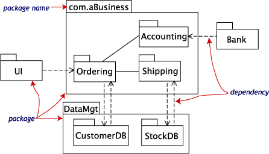
Packages appear as rectangles with small tabs at the top. The package name is on the tab or inside the rectangle. The dotted arrows are dependencies. One package depends on another if changes in the other could possibly force changes in the first.
Object diagrams show instances instead of classes. They are useful for explaining small pieces with complicated relationships, especially recursive relationships.
This small class diagram shows that a university Department can contain lots of other Departments.
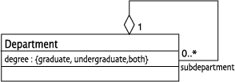
The object diagram below instantiates the class diagram, replacing it by a concrete example.
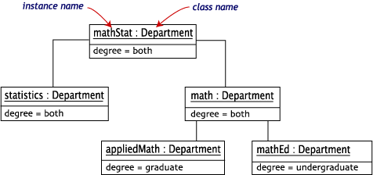
Each rectangle in the object diagram corresponds to a single instance. Instance names are underlined in UML diagrams. Class or instance names may be omitted from object diagrams as long as the diagram meaning is still clear.
Class and object diagrams are static model views. Interaction diagrams are dynamic. They describe how objects collaborate.
A sequence diagram is an interaction diagram that details how operations are carried out -- what messages are sent and when. Sequence diagrams are organized according to time. The time progresses as you go down the page. The objects involved in the operation are listed from left to right according to when they take part in the message sequence.
Below is a sequence diagram for making a hotel reservation. The object initiating the sequence of messages is a Reservation window.
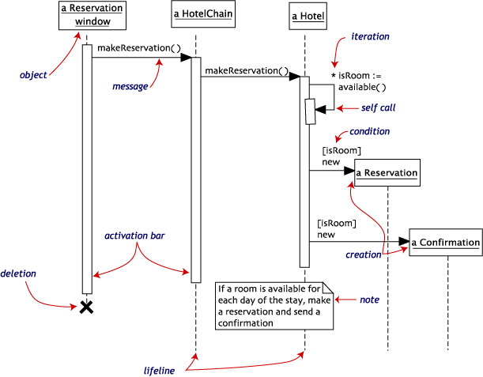
The Reservation window sends a makeReservation() message to a HotelChain. The HotelChain then sends a makeReservation() message to a Hotel. If the Hotel has available rooms, then it makes a Reservation and a Confirmation.
Each vertical dotted line is a lifeline, representing the time that an object exists. Each arrow is a message call. An arrow goes from the sender to the top of the activation bar of the message on the receiver's lifeline. The activation bar represents the duration of execution of the message.
In our diagram, the Hotel issues a self call to determine if a room is available. If so, then the Hotel creates a Reservation and a Confirmation. The asterisk on the self call means iteration (to make sure there is available room for each day of the stay in the hotel). The expression in square brackets, [ ], is a condition.
The diagram has a clarifying note, which is text inside a dog-eared rectangle. Notes can be put into any kind of UML diagram.
Collaboration diagrams are also interaction diagrams. They convey the same information as sequence diagrams, but they focus on object roles instead of the times that messages are sent. In a sequence diagram, object roles are the vertices and messages are the connecting links.
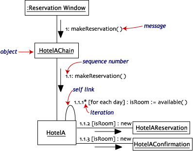
The object-role rectangles are labeled with either class or object names (or both). Class names are preceded by colons ( : ).
Each message in a collaboration diagram has a sequence number. The top-level message is numbered 1. Messages at the same level (sent during the same call) have the same decimal prefix but suffixes of 1, 2, etc. according to when they occur.
Objects have behaviors and state. The state of an object depends on its current activity or condition. A statechart diagram shows the possible states of the object and the transitions that cause a change in state.
Our example diagram models the login part of an online banking system. Logging in consists of entering a valid social security number and personal id number, then submitting the information for validation.
Logging in can be factored into four non-overlapping states: Getting SSN, Getting PIN, Validating, and Rejecting. From each state comes a complete set of transitions that determine the subsequent state.
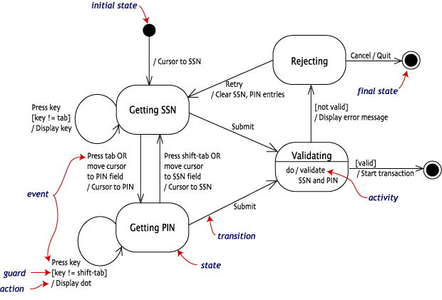
States are rounded rectangles. Transitions are arrows from one state to another. Events or conditions that trigger transitions are written beside the arrows. Our diagram has two self-transition, one on Getting SSN and another on Getting PIN.
The initial state (black circle) is a dummy to start the action. Final states are also dummy states that terminate the action.
The action that occurs as a result of an event or condition is expressed in the form /action. While in its Validating state, the object does not wait for an outside event to trigger a transition. Instead, it performs an activity. The result of that activity determines its subsequent state.
An activity diagram is essentially a fancy flowchart. Activity diagrams and statechart diagrams are related. While a statechart diagram focuses attention on an object undergoing a process (or on a process as an object), an activity diagram focuses on the flow of activities involved in a single process. The activity diagram shows the how those activities depend on one another.
For our example, we used the following process.
"Withdraw money from a bank account through an ATM."
The three involved classes (people, etc.) of the activity are Customer, ATM, and Bank. The process begins at the black start circle at the top and ends at the concentric white/black stop circles at the bottom. The activities are rounded rectangles.
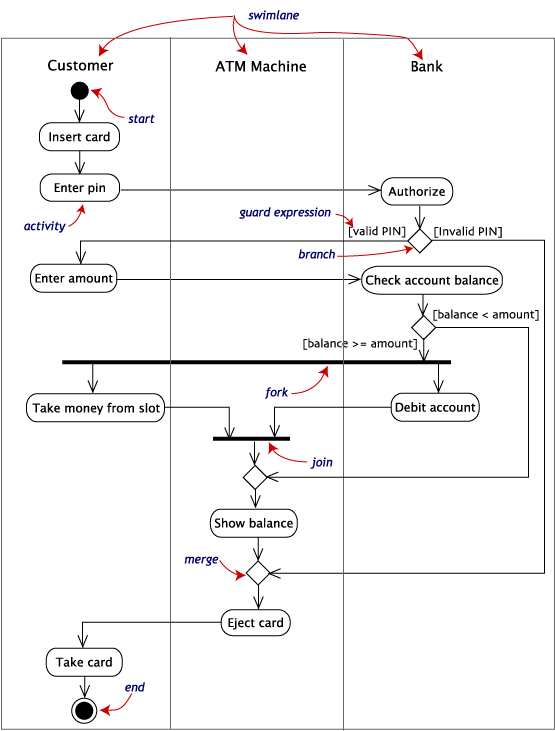
Activity diagrams can be divided into object swimlanes that determine which object is responsible for which activity. A single transition comes out of each activity, connecting it to the next activity.
A transition may branch into two or more mutually exclusive transitions. Guard expressions (inside
A transition may fork into two or more parallel activities. The fork and the subsequent join of the threads coming out of the fork appear in the diagram as solid bars.
Component and deployment diagrams
A component is a code module. Component diagrams are physical analogs of class diagram. Deployment diagrams show the physical configurations of software and hardware.
The following deployment diagram shows the relationships among software and hardware components involved in real estate transactions.
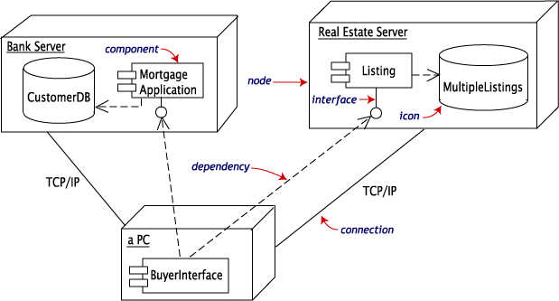
The physical hardware is made up of nodes. Each component belongs on a node.
Most components are shown as rectangles with tabs. The database components, CustomerDB and MultipleListings, use barrel-shaped icons. The Listing and Mortgage components have interfaces for the buyer.
UML Tools
Creating and modifying UML diagrams can be labor and time intensive. But in constructing the diagrams for this short course, we cut our efforts far short by starting with Together Control Center, which is the premier UML modeling tool. We were able to use Together Control Center to develop the original diagrams, modifying those diagrams as our ideas matured. (We then used an illustration program to redraw the diagrams for tutorial presentation -- change fonts, make commentary and notations, etc.)
Together Control Center is available from TogetherSoftTM Corporation at www.togethersoft.com.
Together Control Center always keeps diagrams and code in sync. But it's much more than a mere modeling tool. Together Control Center accelerates development for teams using Java and leading application servers (from BEA, IBM, Sun, IONA, Gemstone, Inprise, Secant, and others) to build e-business and enterprise applications. Together Control Center also supports teams using C++ and IDL, delivering wider coverage and support for large development organizations. TogetherSoft's "platform and building blocksTM" architecture delivers deep integration across all aspects of software development: model-pattern-edit-compile-debug-version-doc-metric-audit-provision-assemble-deploy-run, leading to a "gentle euphoria" in which business experts, modelers, and developers find they can work more productively, increasing the competitive value of what they build and reducing time to market.
Last Revised: